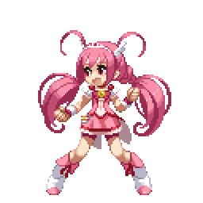
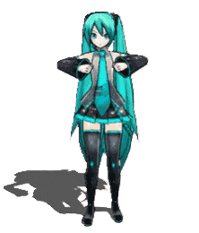
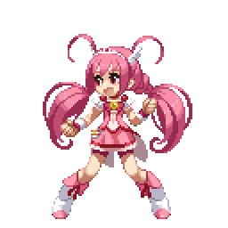
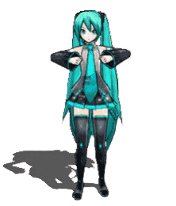

Hi! I’m vkay, a 20-year-old university student. I created this website as a hub for my interests in AI and philosophy. I’m particularly drawn to accelerationism, post-labor economics, existentialism, and the concept of the technological singularity.
I am an accelerationist at heart, and believe that technology can drive radical societal transformation. My ultimate goal is to help guide human civilization toward a technological utopia, or at least contribute to it—though we may not even know what a utopia truly is, or if it even exists. Admittedly, this might sound unrealistic, but I’m committed to pushing humanity forward, whatever that may look like.

 


